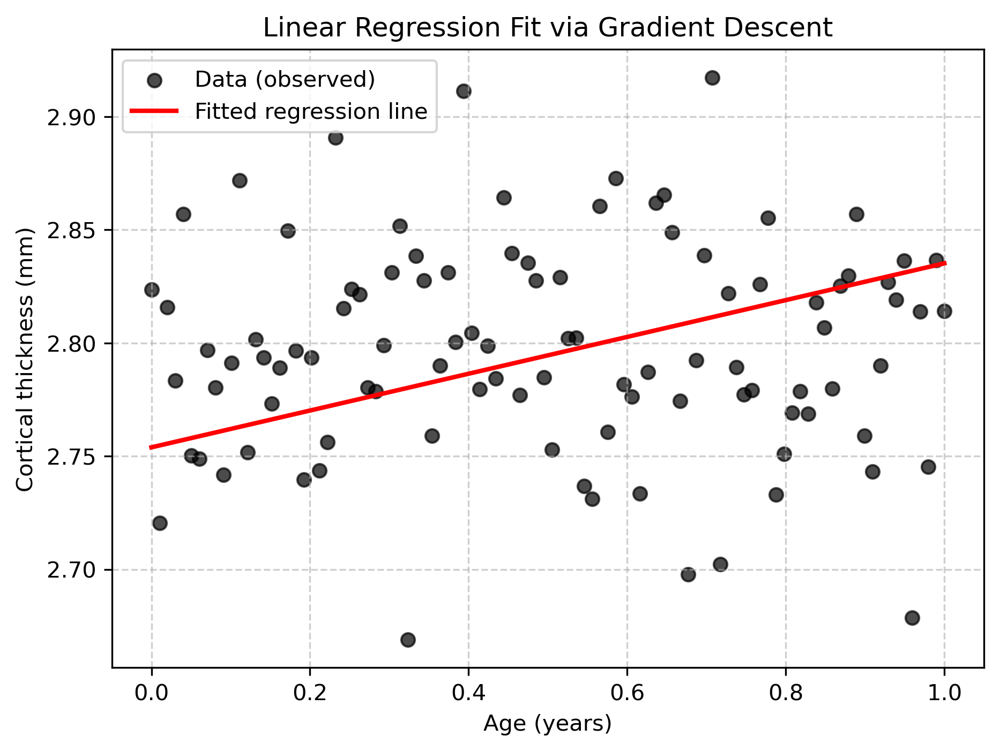
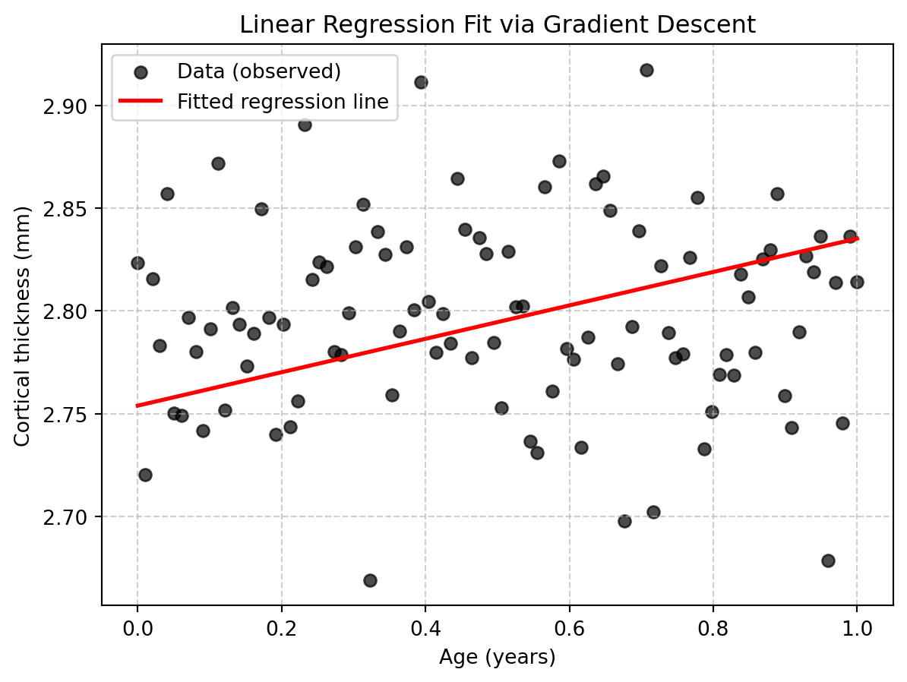

import numpy as np
n = 100
age = np.linspace(0, 1, n) # age, standardized
# Generate target: cortical thickness (in mm)
# slightly decreasing with age + noise
thickness = 2.8 - 0.008 * age + np.random.normal(0, 0.05, n)Regression from scratch
Components of a machine learning algorithm (linear regression)
| Symbol Type | Example | Typical Shape | Description |
|---|---|---|---|
| Scalar | \(a, b, x_i, y, \eta\) | \(1 \times 1\) | Single numeric value (e.g., a feature value, bias, or loss). |
| Vector | \(\mathbf{x}, \mathbf{w}, \boldsymbol{\theta}\) | \(p \times 1\) | Column vector containing multiple values (e.g., features or parameters). |
| Matrix | \(\mathbf{X}, \mathbf{W}, \mathbf{A}\) | \(n \times p\) | 2-D array (rows = samples, columns = features). |
| Dot product | \(\mathbf{w}^T \mathbf{x}\) | scalar | Inner product between two vectors. |
| Outer product | \(\mathbf{x}\mathbf{w}^T\) | \(p \times p\) | Creates a matrix from two vectors. |
| Inverse | \(\mathbf{A}^{-1}\) | \(p \times p\) | Matrix that “undoes” multiplication by \(\mathbf{A}\), if it exists. |
| Hat notation | \(\hat{y}\) | scalar or vector | Estimated or predicted value (e.g., \(\hat{y}\) = model prediction). |
| Bar notation | \(\bar{x}\) | scalar or vector | Mean or average value (e.g., \(\bar{x}\) = sample mean). |
1. The model
The mathematical structure or function family that maps inputs to outputs (supervised learning). The model defines what forms of relationships between input and output can be learned.
For linear regression:

1. Scalar form
Each observation (i) has its own equation: \[ \hat{y}_i = w_0 + w_1 x_{i1} + w_2 x_{i2} + \dots + w_p x_{ip} + \varepsilon_i \]
2. Vector (standard math) form
Compact form for a single observation using vectors: \[ \hat{y}_i = \mathbf{w}^T \mathbf{x}_i + b + \varepsilon_i \]
3. Matrix form
All (n) observations combined (X stacks row vectors): \[ \hat{\mathbf{y}} = \mathbf{X}\mathbf{w} + \mathbf{b} + \boldsymbol{\varepsilon} \] or (if (b) is absorbed as an intercept column of ones in ()): \[ \hat{\mathbf{y}} = \mathbf{X}\mathbf{w} + \boldsymbol{\varepsilon} \]
2. Input Data
- Examples: images, text, sensor data, neuroimaging features, etc.
- Often represented as a matrix X of shape \((n_{samples}, n_{features})\).
- Data needs to be cleaned, normalized, encoded, and sometimes split into train/test sets.
The target variable Y (what should be predicted)
\[ Y = \begin{bmatrix} y_1 \\ y_2 \\ y_3 \end{bmatrix} \]
The input data (what predicts)
\[ X = \begin{bmatrix} 1 & \text{Age}_1 & \text{Sex}_1 \\ 1 & \text{Age}_2 & \text{Sex}_2 \\ 1 & \text{Age}_3 & \text{Sex}_3 \end{bmatrix} \]
3. Parameters (Weights / Coefficients)
The tunable variables that define a specific instance of the model.
Examples:
- w, b in linear regression
- Connection weights in a neural network
- During learning, these parameters are adjusted to best fit the data
\[ w = \begin{bmatrix} w_1 \\ w_2 \\ w_3 \end{bmatrix} \]
Detour: Matrix multiplication
Matrix multiplication is one of the most common operations in linear algebra.
When we multiply two matrices, the number of columns in the first must match the number of rows in the second.
If \(\mathbf{A}\) is of shape \(m \times n\) and \(\mathbf{B}\) is of shape \(n \times p\),
then the result \(\mathbf{C} = \mathbf{A}\mathbf{B}\) will have shape \(m \times p\).
Each element of the result is the dot product of a row from \(\mathbf{A}\) and a column from \(\mathbf{B}\):
\[ c_{ij} = \sum_{k=1}^{n} a_{ik} b_{kj} \]
As an example, here is the multiplication of a 2 x 3 by a 3 x 2 matrix, resulting in a 2 x 2 matrix:
\[ \hat{\mathbf{y}} = \mathbf{X}\mathbf{w} + \mathbf{b} + \boldsymbol{\varepsilon} = \]
\[ = \begin{bmatrix} a_{11} & a_{12} & a_{13} \\ a_{21} & a_{22} & a_{23} \end{bmatrix} \begin{bmatrix} b_{11} & b_{12} \\ b_{21} & b_{22} \\ b_{31} & b_{32} \end{bmatrix} = \begin{bmatrix} a_{11}b_{11} + a_{12}b_{21} + a_{13}b_{31} & a_{11}b_{12} + a_{12}b_{22} + a_{13}b_{32} \\ a_{21}b_{11} + a_{22}b_{21} + a_{23}b_{31} & a_{21}b_{12} + a_{22}b_{22} + a_{23}b_{32} \end{bmatrix} \]
Exercise:
Exercise: Linear Regression Prediction
A linear regression model estimates the relationship between predictors (features) and a target variable.
Given an input matrix \(\mathbf{X}\) and a weight vector \(\mathbf{w}\), the model predicts target values \(\hat{\mathbf{y}}\) according to:
\[ \hat{\mathbf{y}} = \mathbf{X}\mathbf{w} \]
Task
You are given the following data X, that the following weights w were fitted to:
\[ \mathbf{X} = \begin{bmatrix} 1 & 2 \\ 1 & 4 \\ 1 & 6 \end{bmatrix}, \quad \mathbf{w} = \begin{bmatrix} 0.5 \\ 1.2 \end{bmatrix} \]
Compute the predicted values \(\hat{\mathbf{y}}\) (by hand).
Do the same using the numpy package using the dot product:
import numpy as np
X = np.array([[1,2],[1,4],[1,6]])
w = np.array([[0.5],[1.2]])
Solution
Goal: Compute \(\hat{\mathbf{y}} = \mathbf{X}\mathbf{w}\).
Given \[ \mathbf{X} = \begin{bmatrix} 1 & 2 \\ 1 & 4 \\ 1 & 6 \end{bmatrix}, \quad \mathbf{w} = \begin{bmatrix} 0.5 \\ 1.2 \end{bmatrix} \]
Step-by-step \[ \hat{\mathbf{y}} = \begin{bmatrix} 1 & 2 \\ 1 & 4 \\ 1 & 6 \end{bmatrix} \begin{bmatrix} 0.5 \\ 1.2 \end{bmatrix} = \begin{bmatrix} 1\cdot0.5 + 2\cdot1.2 \\ 1\cdot0.5 + 4\cdot1.2 \\ 1\cdot0.5 + 6\cdot1.2 \end{bmatrix} = \begin{bmatrix} 2.9 \\ 5.3 \\ 7.7 \end{bmatrix} \]
Result \[ \hat{\mathbf{y}} = \begin{bmatrix} 2.9 \\ 5.3 \\ 7.7 \end{bmatrix} \]
** Using NumPy check**
import numpy as np
X = np.array([[1,2],[1,4],[1,6]])
w = np.array([[0.5],[1.2]])
#y_hat = X @ w
np.dot(X,w)
y_hat4. Objective or Loss Function
A quantitative measure of how well the model performs.
- It defines the goal of learning.
- Examples:
- Mean Squared Error (MSE) for regression
- Cross-Entropy Loss for classification
- Negative log-likelihood for probabilistic models
Aim: The algorithm tries to minimize (or maximize) this loss function.
Example: mean squared loss \[ L = \frac{1}{n} \sum_{i=1}^{n} (\hat{y}_i - y_i)^2 \]
\(L\) — total loss (the value we minimize)
\(n\) — number of samples
\(y_i\) — true (observed) value for sample i
\(\hat{y}_i\) — predicted value for sample i
The squared difference \((\hat{y}_i - y_i)^2\) measures the error for each prediction. Taking the mean makes the loss independent of sample size.
Task
You are given a target vector \(y\), in addition to the previous vector \(\hat{y}\):
\[ \mathbf{y} = \begin{bmatrix} 3.0 \\ 5.0 \\ 8.0 \end{bmatrix}, \qquad \hat{\mathbf{y}} = \begin{bmatrix} 2.9 \\ 5.3 \\ 7.7 \end{bmatrix} \]
Calculate the mean square loss between the predicted changes from the previous task and the target vector y by hand.
Write a function in python to do it. The function should take \(y\) and \(\hat{y}\) as input and return the mean squared loss:
Loss = mean_quared_loss(y, y_hat)
Solution
We can compute the Mean Squared Error (MSE) step by step.
Given
\[ \mathbf{y} = \begin{bmatrix} 3.0 \\ 5.0 \\ 8.0 \end{bmatrix}, \qquad \hat{\mathbf{y}} = \begin{bmatrix} 2.9 \\ 5.3 \\ 7.7 \end{bmatrix} \]
Step 1 — Write the formula
\[ L = \frac{1}{n} \sum_{i=1}^{n} (\hat{y}_i - y_i)^2 \]
Here \(n = 3\).
Step 2 — Compute the individual errors
| (i) | (y_i) | (_i) | (_i - y_i) | ((_i - y_i)^2) |
|---|---|---|---|---|
| 1 | 3.0 | 2.9 | -0.1 | 0.01 |
| 2 | 5.0 | 5.3 | +0.3 | 0.09 |
| 3 | 8.0 | 7.7 | -0.3 | 0.09 |
Step 3 — Sum and average
\[ L = \frac{1}{3} (0.01 + 0.09 + 0.09) = \frac{0.19}{3} = 0.0633 \]
Final Result \[ L = 0.0633 \]
Solution Python
import numpy as np
y = np.array([3.0, 5.0, 8.0])
y_hat = np.array([2.9, 5.3, 7.7])
def mse(y, y_hat):
result = np.mean((y_hat - y)**2)
return result5. Optimization Algorithm (Learning Rule)
The procedure that adjusts the parameters to minimize the loss.
Examples: - Gradient Descent and its variants (SGD, Adam) - Expectation-Maximization (EM)
Gradient descent based on the loss function
When fitting the w, we want to minimize the loss function. Let’s go step by step:
Gradient of Linear Regression
We start with the linear regression model for a single sample (i):
\[ \hat{y}_i = w x_i + b \]
For \(n\) samples, the mean squared error (MSE) loss is:
\[ L = \frac{1}{n} \sum_{i=1}^n (\hat{y}_i - y_i)^2 \]
Substituting the model prediction gives us the function we need to minimize:
\[ L = \frac{1}{n} \sum_{i=1}^n (w x_i + b - y_i)^2 \]
To minimize the loss function, we need to calculate the derivatives with respect to \(w\) (slope parameter in this case) and b (intercept parameter in this case).
- Calculate the gradient (first derivative) with respect to \(w\) (slope).
- Calculate the gradient (first derivative) with respect to \(b\) (intercept).
Tips: Use differential calculus. You can treat the sum like a bracket ( ). Don’t forget the chain rule, if applicable.
Solution Gradients
1 Gradient with respect to \(w\):
\[ \frac{\partial L}{\partial w} = \frac{1}{n} \sum_{i=1}^n 2 (w x_i + b - y_i) x_i = \frac{2}{n} \sum_{i=1}^n (w x_i + b - y_i) x_i \]
2 Gradient with respect to \(b\):
\[ \frac{\partial L}{\partial b} = \frac{1}{n} \sum_{i=1}^n 2 (w x_i + b - y_i) = \frac{2}{n} \sum_{i=1}^n (w x_i + b - y_i) \]
6 Learning rule
The learning rule \(\eta\) (“eta”) helps to regulate updating the all parameters.
\[\theta := \theta - \eta \frac{\partial L}{\partial \theta}\]
We run this updating algorithm in a loop, spanning 1000 iterations (“epochs”). Finally, we have to select a random set of starting parameters.
Task: Putting it all together.
We are now ready to write the full algorithm.
- Start with a new data set, for example age and cortical thickness, generated from this code:
Initialize your weights, w and b, each at starting point
0.0Fit b and w, with a learning rate of 1e-2 and 1000 iterations using python.
Solution Regression
import numpy as np
import matplotlib.pyplot as plt
# Training data
X = age # input feature (age, for example)
y = thickness # target (e.g., cortical thickness)
n = len(X)
# Initialize parameters
w = 0.0
b = 0.0
eta = 1e-2 # learning rate
epochs = 2000 # number of iterations
# Gradient descent loop
for epoch in range(epochs):
y_hat = w * X + b
dw = (2/n) * np.sum((y_hat - y) * X)
db = (2/n) * np.sum(y_hat - y)
# update weights
w -= eta * dw
b -= eta * db
# print progress occasionally
if epoch % 200 == 0:
loss = np.mean((y_hat - y)**2)
print(f"Epoch {epoch:4d}: w={w:.3f}, b={b:.3f}, Loss={loss:.4f}")
# Final weights
print(f"Final weights: w={w:.3f}, b={b:.3f}")
plt.figure(figsize=(7,5))
plt.scatter(age, thickness, color="black", label="Data (observed)", alpha=0.7)
plt.plot(age, b + w * age, color="red", linewidth=2, label="Fitted regression line")
plt.xlabel("Age (years)")
plt.ylabel("Cortical thickness (mm)")
plt.title("Linear Regression Fit via Gradient Descent")
plt.legend()
plt.grid(True, linestyle="--", alpha=0.6)
plt.savefig("imgs/linear_regression_fit.png", dpi=300, bbox_inches="tight")
plt.show()Epoch 0: w=0.028, b=0.056, Loss=7.8590
Epoch 200: w=0.886, b=2.312, Loss=0.0706
Epoch 400: w=0.684, b=2.437, Loss=0.0421
Epoch 600: w=0.524, b=2.522, Loss=0.0256
Epoch 800: w=0.402, b=2.588, Loss=0.0159
Epoch 1000: w=0.309, b=2.638, Loss=0.0102
Epoch 1200: w=0.237, b=2.676, Loss=0.0069
Epoch 1400: w=0.183, b=2.705, Loss=0.0050
Epoch 1600: w=0.141, b=2.728, Loss=0.0039
Epoch 1800: w=0.109, b=2.745, Loss=0.0032
Final weights: w=0.085, b=2.758